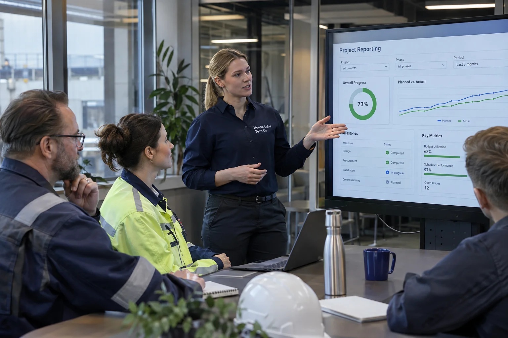

01 / Dedicated on-premises
A server at your site.
Nordic Labs Tech Oy supplies and deploys agreed server hardware within your infrastructure.
Integration into your working processes
Connect engineering documents, requirements and delivery records to the processes your team already uses. Choose where the system runs; define what it supports.
Choose your starting point
Connect document revisions, agreed requirements and engineering reviews so specialists can examine findings with their source evidence.
Illustrative scope. Interfaces, data access, deliverables and acceptance criteria are agreed for each project. AI supports review; responsible specialists retain approval and decision authority.
01 / Dedicated on-premises
Nordic Labs Tech Oy supplies and deploys agreed server hardware within your infrastructure.
02 / Existing infrastructure
We deploy on your available compute after checking capacity, network access and technical prerequisites.
03 / Customer-selected cloud
We agree the cloud environment, access controls and data-handling requirements with your team.
Hosting is selected separately from the service model. Infrastructure suitability and responsibilities are agreed before deployment.
Managed service
Nordic Labs Tech Oy deploys and supports the agreed workflows under a recurring service agreement.
Project deployment
Receive an integrated system, documentation and team training under agreed software licensing and optional support terms.
Implementation / Engineering & document review
Six delivery stages. The schedule follows your agreed scope, data access and technical prerequisites.
01Process & Systems Assessment
An agreed document scope, review responsibilities and baseline of available requirements and revisions.
02Deployment Architecture
An agreed hosting architecture, access model and compute requirements for controlled project records.
03Business Systems Integration
Document registers and approved sources connected through agreed interfaces, with revision identifiers retained.
04Workflow Configuration
Preliminary review rules configured around the project basis, with source-linked findings and human approval steps.
05Validation with Your Team
Sample reviews checked by responsible specialists against source documents and agreed acceptance criteria.
06Commissioning & Handover
A commissioned review workflow, trained users, operating documentation and agreed support.

Commercial planning
Selected scope: Engineering & document review. A tailored proposal defines the deliverables and costs.
Managed service
One-time agreed scope
Project deployment
One-time agreed scope
Managed service
Agreed infrastructure charges¹
Project deployment
Agreed infrastructure charges¹
Managed service
Initial connections²
Project deployment
Initial connections²
Managed service
Initial workflow setup²
Project deployment
Initial workflow setup²
Managed service
Agreed acceptance and training
Project deployment
Agreed acceptance and training
Managed service
Recurring agreed service
Project deployment
Agreed licence; optional support
¹ Hardware or cloud costs and customer-provided resources are identified separately. ² Additional interfaces and later changes are scoped separately. No prices or delivery guarantees are implied. Final terms require written agreement.
Your systems. Your agreed scope.
Discuss your processes, existing systems and preferred hosting environment.
Request a Tailored Proposal